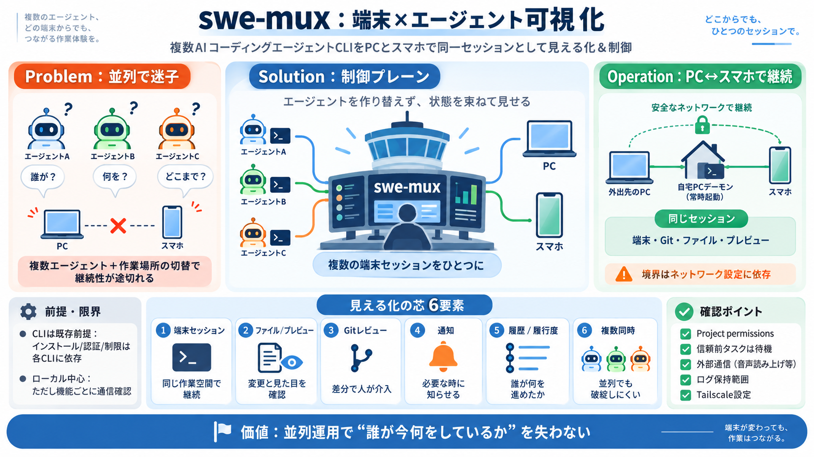

[2405.15793] SWE-agent: Agent-Computer Interfaces Enable Automated Software Engineering
View PDF HTML (experimental) [...] View a PDF of the paper titled SWE-agent: Agent-Computer Interfaces Enable Automated …

Claude Code / Codex のような「コード作業エージェントCLI」を、PCとスマホで同一セッションとして“見える化＆制御”するためのマルチプレクサです。
複数のAIコーディングエージェントを並行させると、「今どれが動いていて、何をどこまでやったか」が分からなくなりがちです。さらにPC/スマホで作業場所が切り替わると、継続性が途切れます。
swe-muxは、エージェント自体を魔法のように作り替えるのではなく、端末上の複数作業を束ねて状態を見せる“制御プレーン／マルチプレクサ”です。
端末・ファイル・プレビュー・Gitレビュー・通知などをまとめ、エージェント側の「進捗／履歴／支援が必要な状態」をユーザーが把握できる設計になっています。
エージェントの実行状態を同じ作業空間として継続。
変更内容や見た目の確認を作業フローに組み込み。
差分確認を“人の介入”がしやすい形で扱う。
必要なタイミングでユーザーに状況を届ける。
どのエージェントが何を進めたかを追える。
並列運用しても破綻しないことを狙う。
スマホはTailscale経由で自宅PCのデーモンへアクセスし、端末・Gitレビュー・ファイル・プレビューなどが“同じセッション”として継続されます。
swe-muxはClaude Code / Codex等をインストール・管理・プロキシする立場ではありません。利用体験は、対象CLIの挙動・認証・利用制限に依存します。
swe-mux側はアカウント不要・データは基本ローカル、という前提で設計されています。一方でエージェント提供者への通信、更新チェック、音声機能などでは外部要素が絡む可能性があります。
swe-muxアカウント／利用テレメトリ（README相当の記載範囲）
エージェント提供者通信・任意の統合・Edge TTS等の読み上げ
「どの機能がネットワーク送信を含むか」を設定とドキュメントで確認
今回の入力は詳細な通信ログ仕様まで含まないため、方針止まり
インポートされたタスク（例：VS Code tasks、package.json scripts、.swe-mux/actions.toml）は、正確なバイト列が信頼されるまで不活性にする考え方が示されています。
プロジェクト（Project）ごとに権限や操作対象を管理。
信頼前のタスクは待機し、自動実行を抑制。
ユーザーが状況を見て判断しやすいUIを意図。
“信頼判断の提示方法”や“誤操作しにくさ”は追加確認が必要。
PyPIのwheelは純Python扱いでフロントエンドも同梱され、Nodeやcheckoutが不要という方針です。導入障壁を下げる狙いがあります。
主眼はAIチャットではなく、AIコーディングエージェントCLIのセッションを制御し、端末と作業情報を統合して見える化することです。
チャット中心ではない。
専用アプリ“だけ”ではなくTailscaleで成立。
クラウドレス保証は機能ごとに要確認。
音声認識はローカル実行でクラウド経由はないとされますが、読み上げはEdge TTS等が関与し外部通信があり得るため、同意が必要です。
デスクトップアプリ中心で、検証もWindowsを唯一の詳細プラットフォームとして実施。
冷回復・ログ匿名性・Tailscale攻撃面などは本文だけでは断定不可。
倫理面として、読み上げは明示同意が必要。
ポート公開やサービス設定誤りが攻撃面になり得る。
swe-muxの価値は、複数エージェント運用で「誰が今何をしているか」を壊さない設計（可視化・通知・履歴・モバイル継続）にあります。
View PDF HTML (experimental) [...] View a PDF of the paper titled SWE-agent: Agent-Computer Interfaces Enable Automated …
# SWE Agent # SWE Agent - AI Coding Assistant An Autonomous Coding Agent that helps you write, analyze, and improve co…
forward-looking statements except as required by law. [...] The option vested in three equal annual installments beginni…
agent settings and task domains, covering three state-of-the-art agent access-control mechanisms. FragFuse achieves an a…
### Community [...] We introduce SWE-Interact, a new testbed for evaluating coding agents on multi-turn, interactive, us…